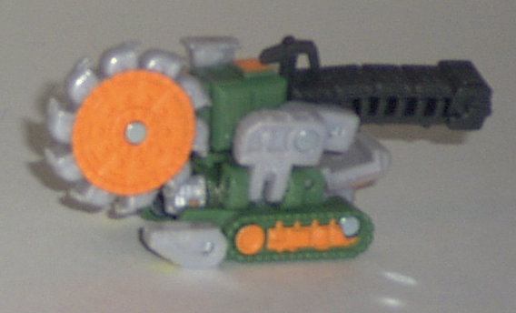
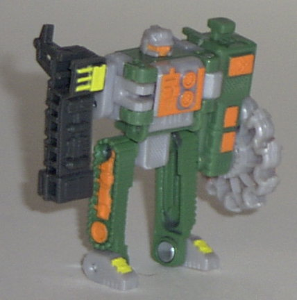
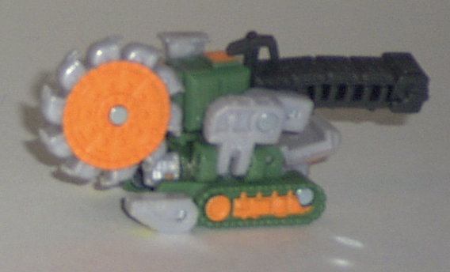
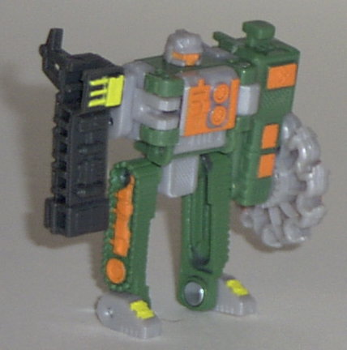
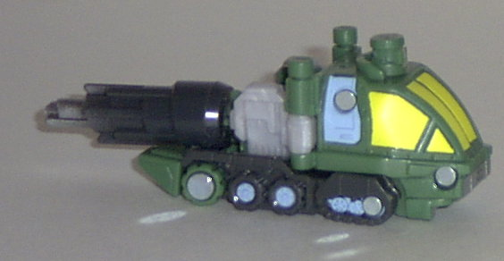
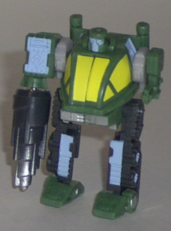
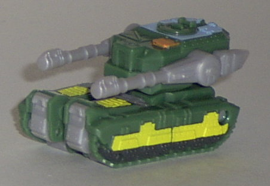
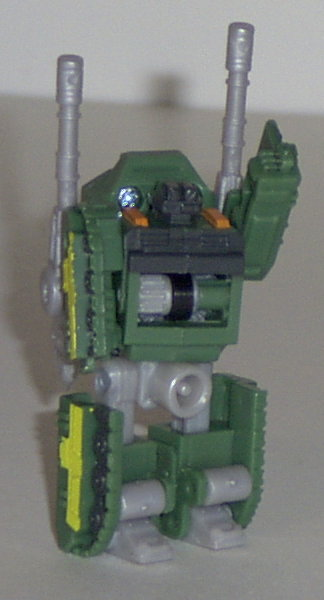

Buzzsaw
Buzzsaw
 
Difficulty of Transformation : Easy
Color Scheme : Forest green, light gray, bright flat orange, and some bright yellow and greenish charcoal black
Individual Rating : 6.1
Road
Wrecker Team
Allegiance
: Minicon
Size
: Mini-Con (3-pack)
Team Gimmick
: Parts move when rolled
across a surface; also can combine with
Cyclonus
Overall Rating
: 6.4
(NOTE: Because this set is a repaint, this
is not a full-blown review. This mainly covers any changes made to the
mold and the color scheme, and merely compares it the Destruction Team.
For a review on the mold itself, read the review of the Destruction Team
here
.)
Buzzsaw


Difficulty of Transformation
: Easy
Color Scheme
: Forest green, light
gray, bright flat orange, and some bright yellow and greenish charcoal
black
Individual Rating
: 6.1
This time around, Buzzsaw
gets a primarily green paint job, instead of a yellow paint job. Considering
that I was never a big fan of the yellow used on the Destruction Team in
the first place, I think that even without the other changes, this version
of Buzzsaw is better than the previous one. However, even with that consideration
out of the way, this version is still better because Buzzsaw has quite
a bit more paint detailing this time around, and it meshes with his other
colors better as well. The orange-on-green and the orange-on-gray is great,
and the yellow is used sparingly enough where it looks neat as well. My
only problem is that the black used on Buzzsaw's right arm is a rather
ugly impure black- a cleaner black would have been better.
No mold changes have
been made to Buzzsaw.
Drill
Bit


Difficulty of Transformation
: Very
Easy
Color Scheme
: Forest green, greenish
charcoal black, baby blue, and some silver, bright yellow, and light gray
Individual Rating
: 7.4
Drill Bit has the same
basic color scheme as the rest of the Road Wrecker Team, meaning that he's
primarily forest green. But it's in the details where he's different- more
greenish charcoal black and baby blue show forth on this figure than on
the other two. I really like the baby blue highlights- they aren't used
too much, but just the right amount where they look great when compared
to the other colors. The greenish charcoal black, as said above, is alright,
but I wish it was more of a pure black. Also, all three of Drill Bit's
cockpit windows are painted now, as opposed to just two on the first one,
which I always thought was rather ridiculous. So although I did like the
original Drill Bit's color scheme, I like this version a bit better.
No mold changes have
been made to Drill Bit- his gear gimmick still clacks loudly and everything.
Grr.
Dualor


Difficulty of Transformation
: Very
Easy
Color Scheme
: Forest green, light
gray, and some bright yellow, black, bright flat orange, and baby blue
Individual Rating
: 5.8
Like the other Road Wrecker
Team members, Dualor now has a primarily green and light gray color scheme.
It looks alright on him, although it's not quite the color I would have
picked for him, primarily because "forest green" and "pom-pom tank" isn't
quite what I'd call accurate word association. Still, I think this version
of Dualor is improved over the last version simply because he doesn't have
that ugly yellow on him. Oh, Dualor still has some yellow highlights, but
they look good when compared to the other colors. He also has a great variety
of highlights of other colors on him, which I like. Well, except for the
paint detailing on his face and chest- it looks like Dualor was tinkering
in the lab and something blew up in his face or something. That paint app
just doesn't make much sense. Other than that, I think he's an improvement.
No mold changes have
been made to Dualor.
Every member of the Road Wrecker Team is better than their Destruction Team counterparts, primarily because they don't have any of that ugly yellow on them, but also because of the greater variety of paint detailing on them. Recommended over the Destruction Team, and moderately recommended overall.
No Stats
Review by Beastbot